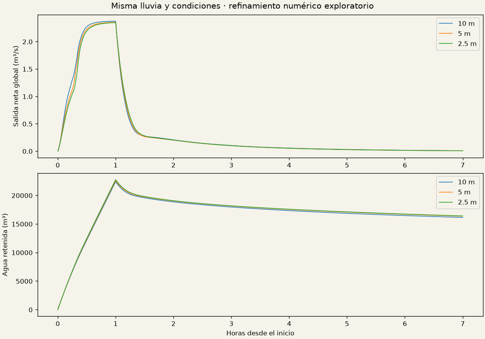
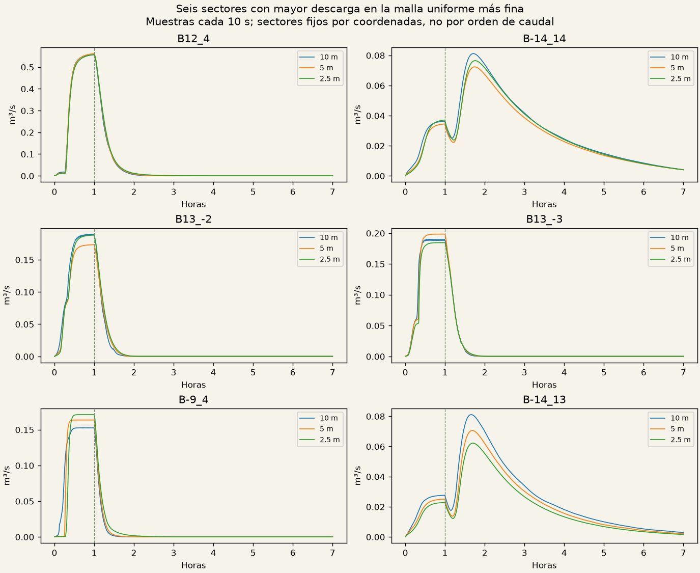
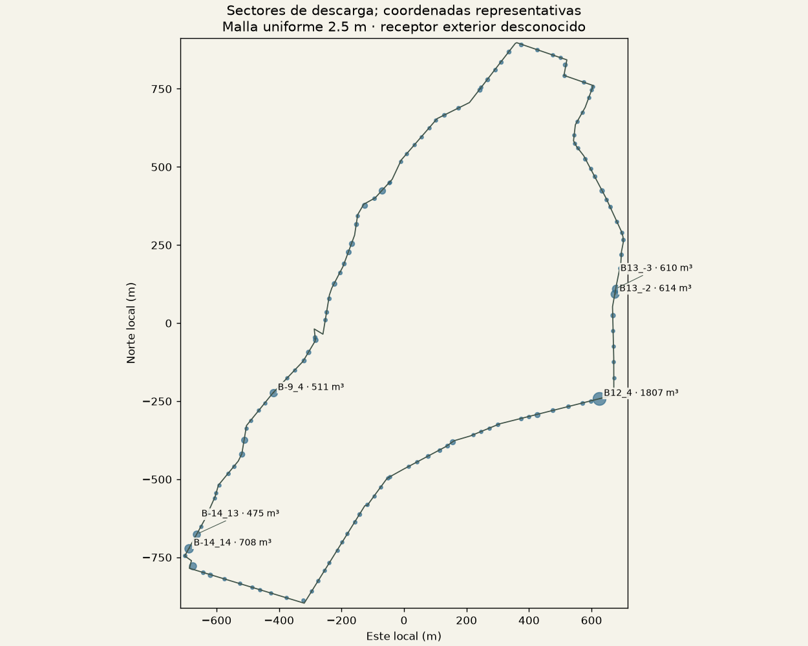
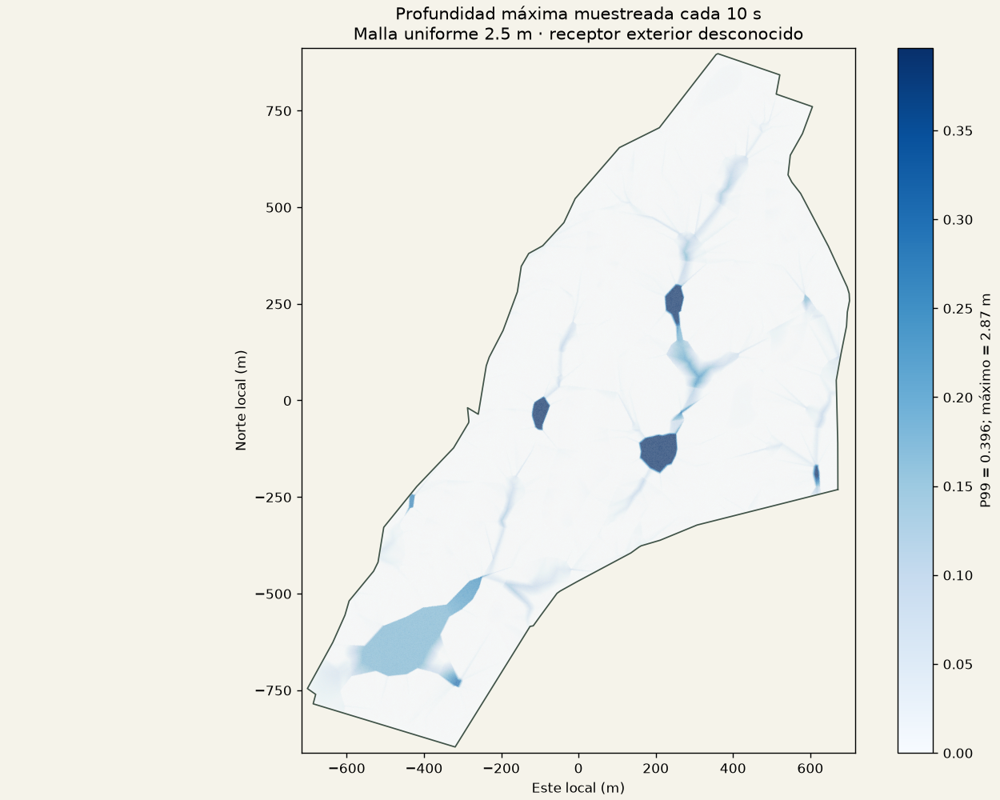
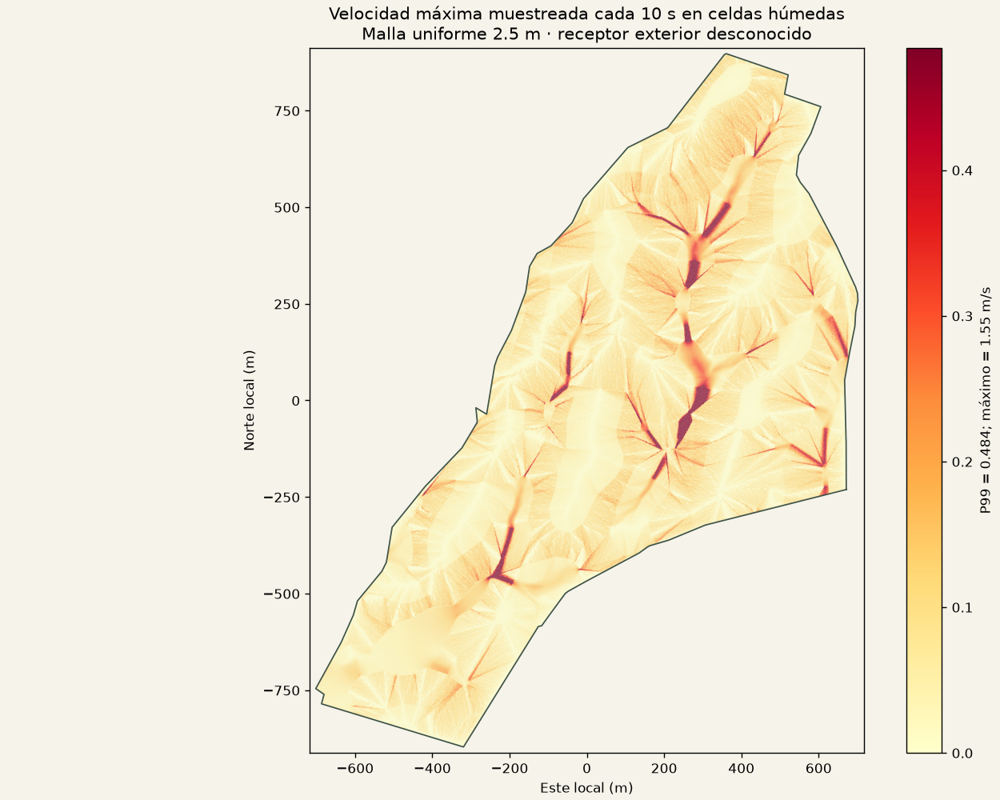

Consultando el proceso local…
Los tiempos son el último intervalo registrado, con hasta diez minutos de retraso. Un cálculo en curso todavía no es un resultado hidráulico validado.
Misma lluvia: 30 mm/h, 60 minutos, infiltración hipotética de 5 mm/h y seis horas posteriores. Terreno topográfico intacto. El receptor final fuera del predio sigue sin confirmar.
Comprobación en curso. Todavía no se declara convergencia.
El criterio exige diferencias menores del 5 % en volumen y caudal máximo, incluyendo los sectores que suman el 95 % de la descarga. Una comprobación local no acredita convergencia global. Profundidad, velocidad y caudal regional se muestrean cada 10 segundos; el pico global es el mayor caudal medio de un intervalo de 10 segundos. Esta comprobación no resuelve picos más breves. Los máximos no necesariamente ocurren simultáneamente.
| Malla | Descarga m³ | Retención m³ | Pico m³/s | Error de balance |
|---|---|---|---|---|
| 10 | 9,478.0 | 16,131.6 | 2.3753 | 0.000000 % |
| 5 | 9,256.2 | 16,352.1 | 2.3553 | 0.000000 % |
| 2.5 | 9,164.7 | 16,398.5 | 2.3482 | 0.000000 % |
global uniform-mesh comparison. Sectores principales fuera de tolerancia: 51. Las diferencias son fina menos gruesa; el porcentaje usa el valor absoluto fino.
| Magnitud | Diferencia firmada | Cambio | Menor de 5 % |
|---|---|---|---|
| netBoundaryOutflowM3 | -221.7392 | -2.40 % | Sí |
| finalStorageM3 | +220.5200 | +1.35 % | Sí |
| infiltrationM3 | +1.2192 | +0.01 % | Sí |
| peakBoundaryDischargeMS3 | -0.0200 | -0.85 % | Sí |
global uniform-mesh comparison. Sectores principales fuera de tolerancia: 36. Las diferencias son fina menos gruesa; el porcentaje usa el valor absoluto fino.
| Magnitud | Diferencia firmada | Cambio | Menor de 5 % |
|---|---|---|---|
| netBoundaryOutflowM3 | -91.4712 | -1.00 % | Sí |
| finalStorageM3 | +46.3461 | +0.28 % | Sí |
| infiltrationM3 | +45.1251 | +0.49 % | Sí |
| peakBoundaryDischargeMS3 | -0.0071 | -0.30 % | Sí |


Puntos representativos de sectores de borde de 50 m; no son posiciones comprobadas de desagües. Los flujos se asignan por el punto medio de cada cara numérica: la longitud de borde atribuida a un sector puede cambiar con la malla. Los parámetros descargables incluyen esas longitudes; parte del cambio regional puede proceder de esta discretización. Coordenadas originales en metros; datum vertical sin confirmar. Condición asumida: exterior seco, sin remanso ni aportes externos.
| Sector | Este | Norte | Cota | Volumen m³ |
|---|---|---|---|---|
| B12_4 | 855001.600 | 1612490.855 | 25.174 | 1806.9 |
| B-14_14 | 853689.116 | 1612011.632 | 14.967 | 708.0 |
| B13_-2 | 855051.552 | 1612825.801 | 29.948 | 613.5 |
| B13_-3 | 855054.668 | 1612843.160 | 29.992 | 609.9 |
| B-9_4 | 853958.382 | 1612509.398 | 21.175 | 511.1 |
| B-14_13 | 853713.962 | 1612057.349 | 14.991 | 475.0 |
| B-14_15 | 853699.884 | 1611956.040 | 14.977 | 457.2 |
| B-2_-9 | 854306.005 | 1613157.002 | 40.823 | 343.4 |
| B-11_7 | 853865.571 | 1612358.371 | 19.882 | 311.8 |
| B-11_8 | 853857.674 | 1612313.153 | 19.869 | 195.1 |
| B-4_-6 | 854209.492 | 1612988.555 | 34.978 | 179.6 |
| B-3_-8 | 854251.079 | 1613109.999 | 39.586 | 177.8 |



Malla uniforme 2.5 m. Se cruzaron los 776 lotes con los centros de las celdas hidráulicas: 55 contienen puntos cuyo máximo supera 10 cm; 0 no contienen centros y quedan sin resolver. El corte de 10 cm es descriptivo, no un umbral de seguridad. Estos máximos no ocurren necesariamente al mismo tiempo ni representan toda la superficie de cada lote.
Terreno natural: no se incluyen barreras de edificios, obras de drenaje, excavaciones o almacenamiento inicial de los lagos propuestos. Las áreas CSV son estimaciones por celdas seleccionadas; las huellas sin centros quedan vacías, sin sustituirlas por el vecino más próximo. Este escenario exploratorio no acredita seguridad de las personas frente a inundaciones.
| Lote | Máximo m | P95 espacial de máximos m | Celdas |
|---|---|---|---|
| 366 | 2.871 | 2.871 | 591 |
| 367 | 2.871 | 2.647 | 600 |
| 365 | 2.871 | 2.481 | 602 |
| 286 | 2.101 | 1.813 | 393 |
| 287 | 2.097 | 1.780 | 572 |
| 285 | 1.596 | 1.270 | 389 |
| 364 | 1.414 | 1.050 | 594 |
| 339 | 1.069 | 1.069 | 644 |
| 264 | 1.069 | 0.898 | 385 |
| 353 | 1.055 | 0.760 | 587 |
Afecciones por huella CSV · Método, resolución y checksums JSON
Límite: 2 GB adicionales; reserva: 3 GB libres; memoria residente del cálculo: 3 GB; máximo 650.000 celdas. Se conserva una sola reproducción candidata comprimida. La reproducción publicada tiene su resolución indicada en Maps → Lluvia y drenaje.
Se conserva la reproducción de 10 m: la candidata de 5 m aumenta el coste GPU de forma reproducible en el ensayo nativo. Los resultados afinados se entregan en el informe.
Informe JSON · Métricas CSV · Comparaciones por sector · Coordenadas y salidas · Informe y reproducción de referencia
Las capas del juego son visualizaciones de datos precalculados. Este análisis no calibra suelos, lluvia, precisión del levantamiento ni condiciones aguas abajo. La inspección completa del juego y su cadencia de navegador siguen sin verificar; los ensayos GPU disponibles son escenas nativas aisladas.